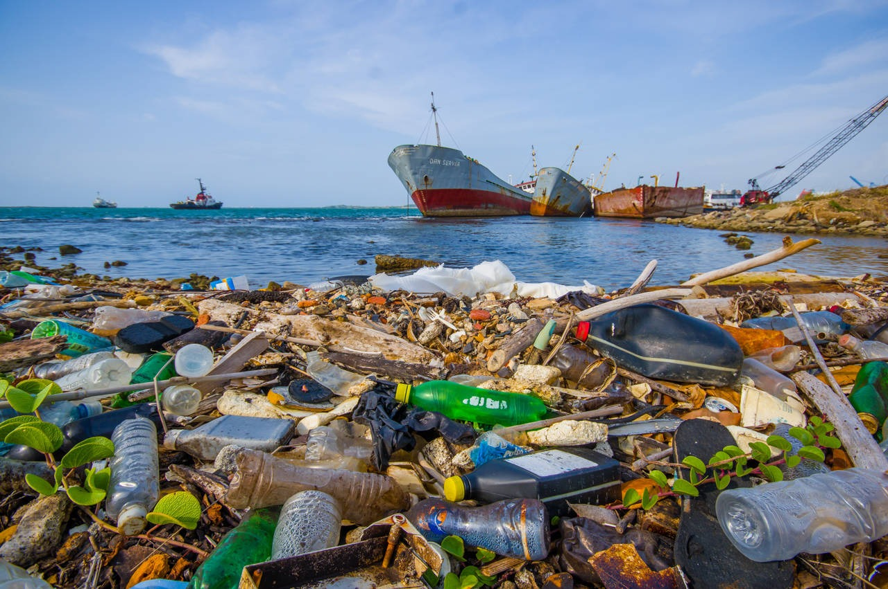

1
Contaminación por plásticos
Los residuos plásticos llegan al mar y afectan a peces, tortugas y otras especies.
Los animales marinos pueden ingerir residuos plásticos o quedar atrapados en ellos.
Reducir los plásticos de un solo uso y disponer correctamente los residuos ayuda a protegerlos.
